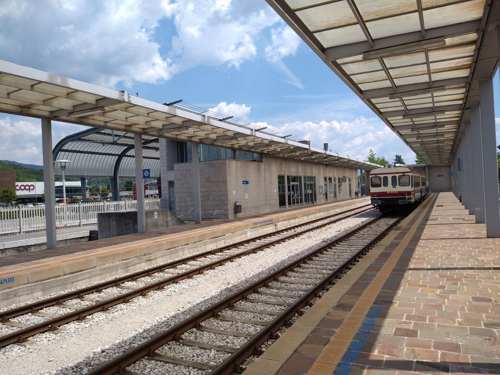
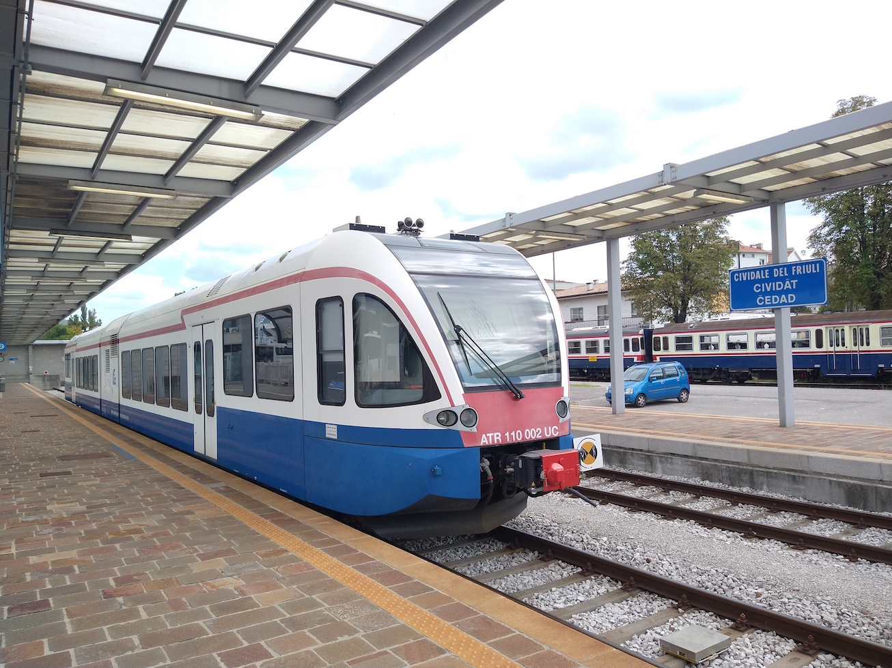
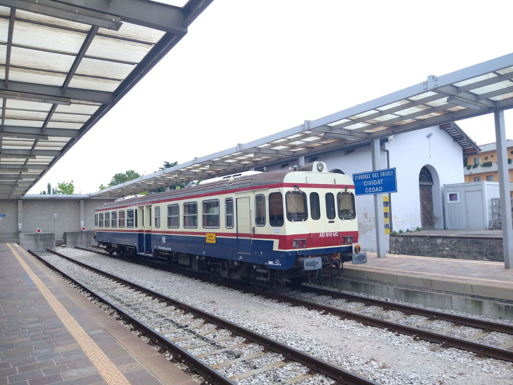

The train to Udine, about to leave. Announcements are made in various languages over the PA speakers.

The Cividale railway station. It is the terminus for the line that links the town with the city of Udine once an hour.

A Stadler GTW train waiting at the station. This line isn't electrified, so service is carried out using DMUs - generally this one, though older Class 663s are sometimes used as well.
These trains are very modern, with air conditioning and full accessibility. All the stations on the line, apart from Udine, were renovated recently and are accessible.

A Class ALn 663 diesel railcar. These trains were (and still are) used extensively on many diesel lines in Italy, though on the Udine-Cividale line the more modern Stadlers are generally used instead.